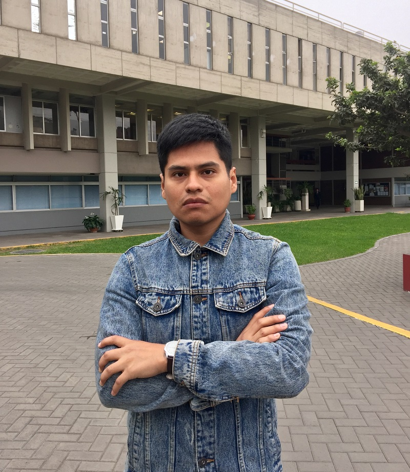

Coordinador de Tecnologías de Información
Pariona Aguinaga, Carlos Adolfo
Profesional en Ingeniería Industrial nacido en la ciudad de Lima. Con 29 años de edad, e inucursiona en ingeniería biomédica como segunda especialidad. Planea especializarse en señales e imágenes médicas con el objetivo de mejorar los métodos de diagnósticos, volviéndolos rápidos, eficientes y al alcance de todos. Espera mucho de esta carrera, sobre todo la oportunidad de crear empresa en el sector salud que permita a nuestro país ser pionero en el desarrollo de nuevos equipos médicos.